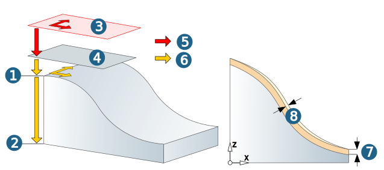
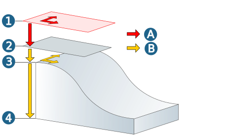

Parameters
Machining area / Allowance
The vertical machining area is defined by the values for Top and Bottom of the component.
Top (1): Maximum Z value in the current job. Bottom (2): Maximum Z value in the current job. If the machining area is to be manually limited in the Z direction, use the Manual top or Manual bottom functions. : Specify the value for top and bottom directly on the model by clicking the icon. Manually defined values are not associative. If changes are made to the model geometry, the values will not automatically change as well.
(3) Clearance plane, (4) clearance distance, (5) rapid movement, (6) movement at machining feedrate.
Allowance: (7) Remaining material on the workpiece relative to the direction of the surface normals. Added to the Clearance parameter during machining (see section Check tool). Additional allowance in XY: (8) Additional horizontal allowance if vertical and flat areas of the part are to be machined with different allowances.
|  |
Vertical infeed mode
The vertical infeed mode defines the mode of computation for the vertical distances between the milling paths.
Only finishing: Only a finishing path is created.
Constant vertical stepdown: The stepdown takes place with a fixed vertical increment.
Parallel vertical stepdown: The vertical stepdown takes place parallel to the top of the workpiece. Define the Vertical stepdown and the Material height.
Horizontal infeed mode
The horizontal infeed mode defines the mode of computation for the distances between the individual milling paths.
The computation of the path distance for ruled profiles and flow profiles can be controlled via user-defined synchronization lines.
Constant stepover (1): Infeed with fixed horizontal increment. All milling paths have the same – horizontal in stepover direction – distance to each other. Enter the increment for the Horizontal stepover. Machining of steep surfaces causes steps in the surface. Possible remedies: Machining at an angle (turning the workpiece around the Z axis). Select Scallop height infeed mode. For round parts select one of the guide curve strategies.
Scallop height (2): Machining is only possible with ball mills. A predefined scallop height is not exceeded even on steep side surfaces. The lateral distance between the individual milling paths depends on the surface curvature and steepness. The complete Z-level is taken into consideration and the smallest value found is used to determine the stepdown.
 |
Scallop height value: Enter the required scallop height. The Scallop height infeed mode will significantly increase the calculation time for the milling paths.
Method for calculating the scallop height
(1) Scallop height (Rth), (2) Tool diameter (d), (3) Minimum horizontal stepover (br)
Minimum horizontal stepover: Limits the distance between the milling paths. Avoids machining that is too fine when the required scallop height cannot be reached because of very steep side surfaces. Apply this for machining areas with steep side surfaces (surface slope > 50°) and very smooth surfaces.
Constant on curve projection: A guide curve is projected onto the surfaces and stepped equally on the basis of the specified infeed. This significantly improves surface quality. The minimum horizontal stepover limits the distance of the paths, particularly in steep areas. Only one profile (spline, line, curve) can be defined. Vertical surfaces cannot be machined.
For general information on the vertical machining area and infeed, see section Machining area andInfeed / allowance
Retract mode
The retract mode defines the Z level where the system executes horizontal infeed movements.
The mode set is valid for all machining directions (incl. approach, retract and return movement macros) and for the profiles machined with them. Exception: Machining in zigzag mode without return macro.
Clearance distance : all retract and infeed movements are executed via the clearance distance. Starting and end positions of an infeed movement in rapid are displaced in Z direction in order to guarantee a collision-free linear infeed movement. The clearance distance is added to these positions.
Clearance plane : all retract and infeed movements are executed via the clearance plane.
Clearance
Clearance plane and clearance distance apply in the direction of the Z axis of the current frame.
Clearance plane (1): Plane for rapid tool movements. Specification in absolute dimensions Define the clearance plane by right-clicking on the icon. Select a point and confirm the selection.
Warning
Traversing movements on the clearance plane are not checked with regard to collisions. Therefore, this plane must be placed at a sufficient distance above the surface of the workpiece.
Clearance distance (2): Distance to the current toolpath to be milled. Above the clearance distance, infeed takes place as rapid in the Z direction (A); below the clearance distance infeed takes place at the Z feedrate (B).
(3) Top, (4) Bottom
|  |